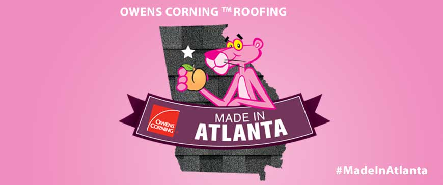
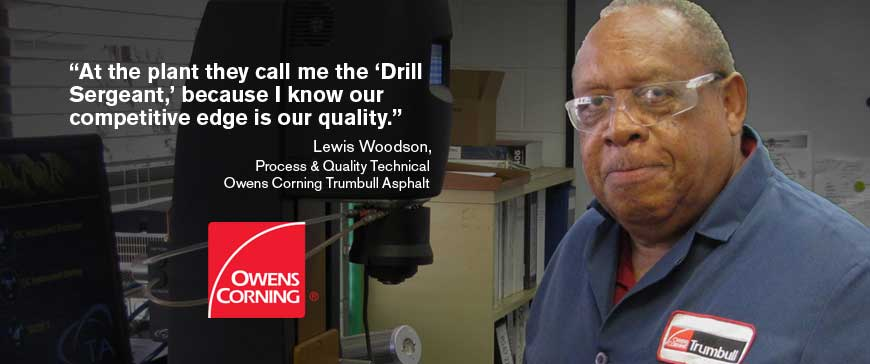

Roofing Proudly Made by your Owens Corning® Atlanta Plant Neighbors
- 

- 
Owens Corning™ Roofing began local production of fiberglass reinforced asphalt shingles in 1977. For almost 40 years, Owens Corning has been producing high-quality 3-tab and architectural shingles for shipment throughout Georgia and the Southeast. Owens Corning® Supreme® Shingles, Oakridge® Shingles and Duration® Series shingles with patented SureNail® Technology* are popular choices of professional roofing contractors and are the highest-selling shingles shipped out of the Atlanta Plant.
Owens Corning Atlanta employs over 100 dedicated employees who help make enough Owens Corning shingles every day to cover 300 homes. Also on site is a Trumbull™ Asphalt manufacturing facility. Asphalt is a key critical ingredient in the production of fiberglass-based shingles, and Owens Corning Trumbull™ Asphalt is the leading supplier of weathering-grade asphalt to the roofing industry. The Atlanta Trumbull™ Asphalt plant employs almost 30 people.
The Owens Corning™ Roofing Brand Promise
When you buy Owens Corning™ Roofing shingles, you can rest assured that our commitment to quality is of the highest importance. Our shingles undergo extensive testing to ensure they meet industry standards and certifications so that you can feel good about your roofing investment. In addition, our products will delight you with their beauty and provide you with a confidence that your home is protected, today and tomorrow.
Since 1938, Owens Corning has had a history of innovation. We invented Fiberglas® fibers which helped transform many markets such as automotive, recreational, and building materials—our famous PINK™ Insulation has been used in millions of homes across the country. We held our first fiberglass shingle patent in 1965, and helped convert the old organic shingle marketplace throughout the 1980’s. Today, the fiber glass and asphalt composition of roofing shingles plays a crucial role in the durability and performance of all asphalt shingles.
*SureNail® Technology U.S. Patent #7,836,654 and other patents pending.
"Making shingles is a team effort! I’m proud to say that I lead a group of dedicated employees who everyday do their part to make the high quality Owens Corning shingles that help protect the homes in your neighborhood."
John Aidoo,
Roofing Plant Site Leader
Choosing the right shingle for your home is fun, and we have a style and color for every home.
Browse Owens Corning™ Shingles »
Get the peace of mind that comes with a contractor who has qualified for Preferred status.
Find a Preferred Contractor »
If you prefer to shop for roofing products yourself, find the nearest retailer or professional distributor here.
Find the nearest location »